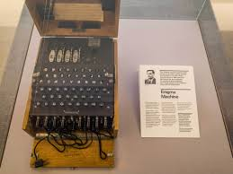

Career
Alan Turing's career in mathematics and cryptography has had a lasting impact on technology and society. His theoretical work laid the foundation for modern computing, and his role in cracking the Enigma code is credited with shortening World War II by several years.
